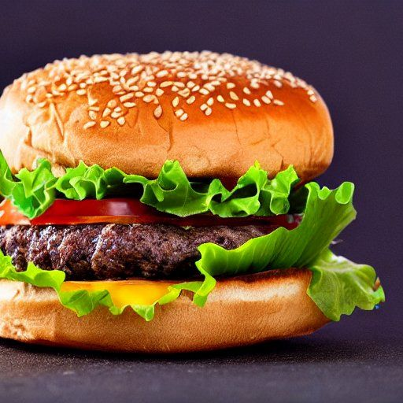

Hamburger aux haricots noirs et riz
Portions: 12-18 boulettes
Ingrédients
-
1 1/2 t de haricots noirs secs

-
2 t de riz cuit
-
4-5 gros oignons (2/3 pour boulettes, 1/3 en accompagnement)
-
4 c. à soupe de ketchup
-
2 t de chapelure
-
1/4 c. à thé de sel
-
1/4 c. à thé de cumin
-
5 c. à soupe de huile
Instructions
Préparation
Faire tremper 1 1/2 t de haricots noirs secs pendant 8 à 24 heures. Jeter l'eau de trempage, rincer, couvrir d'eau et cuire une vingtaine de minutes à l'autocuiseur. Jeter l'eau de cuisson.
Cuire 1 t de riz sec. Il faut 2 t de riz cuit pour la recette. (Le riz double de volume lors de la cuisson)
Couper 4-5 gros oignon et les faire caraméliser*.
* Pour caraméliser des onions, chauffer une grande poêle à feu moyen-vif et ajouter un peu d'huile. Ajouter les oignons et assaisonner avec une pincée de sel. Cuire, en remuant de temps en temps, jusqu'à ce que les oignons soient tendres et légèrement dorés, environ 10 minutes. Réduire le feu à doux et poursuivre la cuisson, en remuant de temps en temps, jusqu'à ce que les oignons soient bien dorés, environ 25 minutes. Ajouter un peu d'eau ou de vin blanc dans la poêle si les oignons commencent à coller. Goûter et assaisonner avec du sel et du poivre supplémentaires, si désiré.
Boulettes
Dans un grand bol, réduire en purée grossière à l'aide d'un mélangeur à main les haricots avec le riz, le ketchup, les épices et le 2/3 des oignons caramélisés. Garder le reste comme accompagnement. J'aime bien ne pas trop mélanger, ça ressemble à du steack hâché avec les pelures des haricots noirs et les grains de riz.
- 4 t d'haricots noirs cuits
- 2 t de riz cuit
- 1 t d'oignons caramélisés
- 4 c. à soupe de ketchup
- 1/4 c. à thé de sel
- 1/4 c. à thé de cumin
Ajouter 2 t de chapelure et combiner à la main. (Ça devient trop sec pour utiliser le mélangeur à main. J'en ai déjà brûlé un en essayant...)
Façonner des boulettes. Faire revenir avec de l'huile dans une poêle à feu moyen-vif 2-3 minutes de chaque côtés.